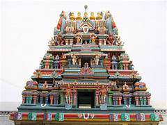

Beauty of Ariyalur
PERUMAL KOVIL

Ariyalur is a district in Tamil Nadu, India, known for its rich cultural and historical heritage. While the region has several temples, one prominent "Perumal Kovil" (temple dedicated to Lord Vishnu, often referred to as Perumal in Tamil Nadu) in Ariyalur is the Kaattu Perumal Temple in the village of Varadarajapuram. Below are details about the temple and its cultural significance:
Kaattu Perumal Temple
Deity: The temple is dedicated to Lord Vishnu, worshipped here as Kaattu Perumal.
Architecture: It reflects the traditional Dravidian temple architecture, featuring gopurams (tower gateways), intricately carved pillars, and a serene environment.
Significance: This temple holds religious and historical significance, often frequented by devotees who believe in the power of Vishnu to protect and bless devotees.